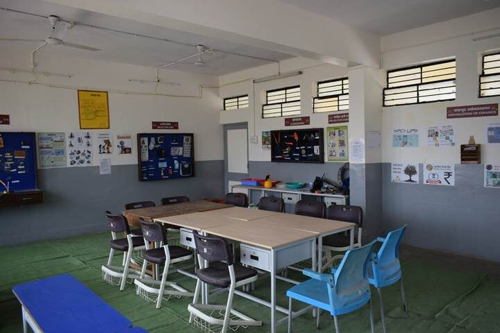
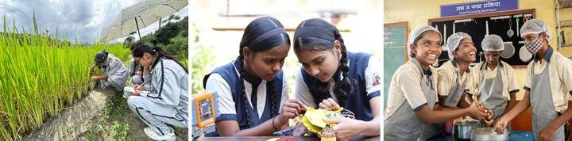
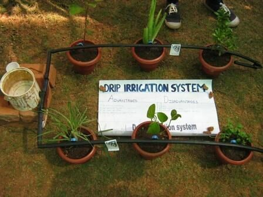
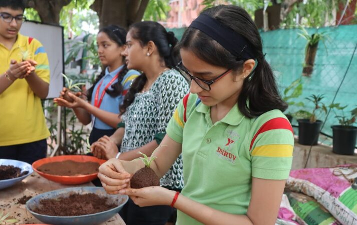
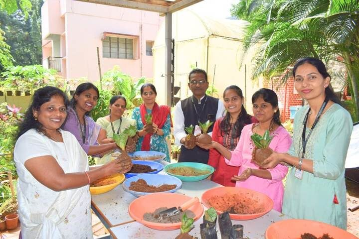

Start with the purpose, not the room
Most CSL planning starts with the room: how big, which tools, which vendor. But management will ask what it achieves, parents will ask what it does for marks, and teachers will ask what changes in their week.
Answer those first, and the room, timetable and budget follow. After 20 years in government and private schools, and having helped build labs in 20,000+ schools, Lend A Hand India sees five purposes every CSL should serve. Together, they add up to the real benefits of skill education for students.
1. Every student tries every kind of work
NEP 2020 asks for exposure before specialisation. Between Classes 6 and 10, every student should garden, build, cook and serve, across all three forms of work. That breadth is also about dignity: no work is “for someone else”, and learning about different disciplines can help students gain better multidisciplinary problem-solving skills.

Plan for it: choose subjects across all three forms of work, and give everyone lab time, not just an elective group.
2. Academics become concrete
This is your answer to the parent who asks about marks. Gardening uses biology and maths (area, cost, yield). Cooking is chemistry and ratios. A drip irrigation model combines physics, budgeting and report writing in one project. CSL helps bring concepts into experience and further reinforces learning

Plan for it: have subject teachers and the skill teacher agree one or two cross-subject links per project each term.
3. Students learn to think, not just make
A lab can be busy every period and still teach little. The products look good, and the learning stops there. We call this procedural drift.
The fix isn’t more equipment. It’s building inquiry and reflection into every session: students predict and investigate before the activity, then explain what they found afterwards. That turns “we planted seeds and watered them” into “loamy soil holds water longer because the particles are smaller”, which is exactly what Kaushal Bodh assessment rewards.

Plan for it: train teachers to facilitate, not just demonstrate, and protect the last ten minutes of every session for reflection.
4. Students see careers and their community
The CSL is where students discover what they enjoy, long before they choose a stream. Farm visits, a nurse or electrician as a guest expert, and a Kaushal Mela all connect the lab to real work. Technology belongs here too: CBSE wants AI to be used to solve problems in every sector, from crop care to clinic queues.
Plan for it: identify five local businesses or practitioners to involve this year, and put a Kaushal Mela on the calendar.
5. Teachers grow, and so does the school
Teachers who learn to ask rather than tell carry that habit into every class. Over time, the lab shapes how the school sees itself: hands-on, inclusive and connected to its community.
“This training has provided me with the skills to transition from a teaching role to that of a facilitator.” — Priyanshu Bhatt, SNS GIC Talla Ramgarh, Nainital

Plan for it: budget for follow-up mentoring, not a one-off workshop, and name a CSL in-charge who reports to you each term.
The one-year check
A year in, ask one question per purpose. Any “no” shows you where to focus.
• ☐Has every section used all three forms of work?
• ☐Can teachers name a maths or science topic the lab strengthened?
• ☐Do students explain why something worked, not just what they did?
• ☐Has anyone from outside the school visited or taught in the lab?
• ☐Does every session start with a question and include investigation and reflection?
Plan the purpose before the purchase
Lend A Hand India works with schools as an implementation partner, not an equipment vendor. We help with sector selection, lab planning, teacher training and mentoring. Book a School Readiness Consultation, or visit Karigar, our School of Applied Learning in Pune, to see a working lab.
More in this series: Composite Skill Lab Checklist and What a Composite Skill Lab Is Not.